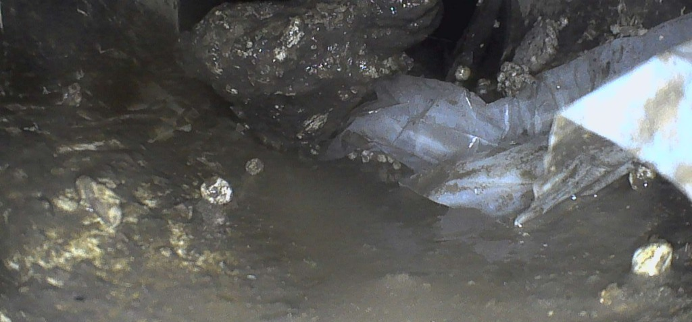
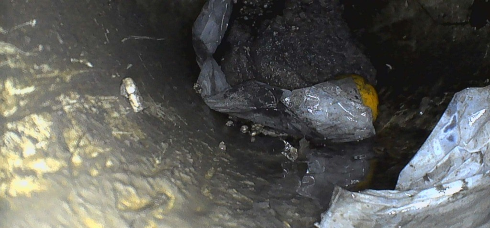

Colector
Tapón de bolsas y sedimento
Bolsas plásticas compactadas con sedimento cerraban buena parte del colector. Explicaban el drenaje lento y los rebalses en la cámara de registro.
En Lo Barnechea hay muchas parcelas y casas con terrenos grandes. Las redes son largas y a veces no tienen cámaras de registro intermedias, así que encontrar una falla sin cámara es casi imposible.
Con 30 m de cable recorremos tramos largos desde un solo acceso y le decimos en qué tramo está el daño, para excavar solo ahí.
✓ Cotización sin costo · ✓ Informe con fotos y video · ✓ Factura electrónica


Lo que aparece cuando se mira la tubería por dentro.
Grasa, toallitas, bolsas o tierra que tapan el paso.
Raíces que entran por uniones y grietas.
Grietas por donde se escapa el agua.
Uniones mal hechas o desplazadas.
Tramos deformados por carga o mala instalación.
Tramos donde el agua no escurre y se acumulan sólidos.
Lo mismo en cada inspección.
Entramos por un registro o una rejilla y recorremos la tubería por dentro, sin picar.
Qué encontramos en cada tramo y a cuántos metros del acceso.
Si hay que intervenir, cotizamos con el video a la vista.
Del primer mensaje al informe.
Nos escribe con su dirección en Lo Barnechea y qué está pasando. Coordinamos la visita.
Entramos con la cámara y recorremos la red. Usted ve en la pantalla lo mismo que nosotros.
Le enviamos el informe con fotos y el video del recorrido.
Capturas de nuestra cámara en un colector domiciliario con drenaje lento y rebalses en la cámara de registro.
Bolsas plásticas compactadas con sedimento cerraban buena parte del colector. Explicaban el drenaje lento y los rebalses en la cámara de registro.
En el mismo tramo había escombros y más bolsas, con agua detenida detrás. Se retiraron sin excavar el patio.
Una pelota había quedado retenida dentro del colector. Con la cámara se vio dónde estaba y se sacó sin romper.
Complete el formulario y le enviaremos el valor de la inspección por WhatsApp.
Le decimos qué hay dentro de la tubería y en qué tramo está el problema.
Pedir cotización